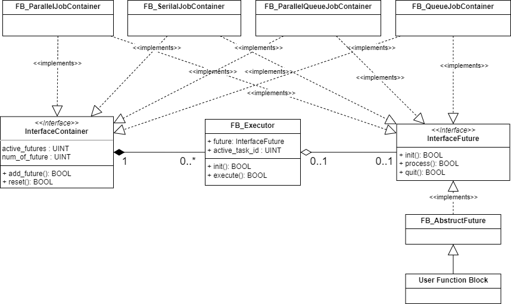
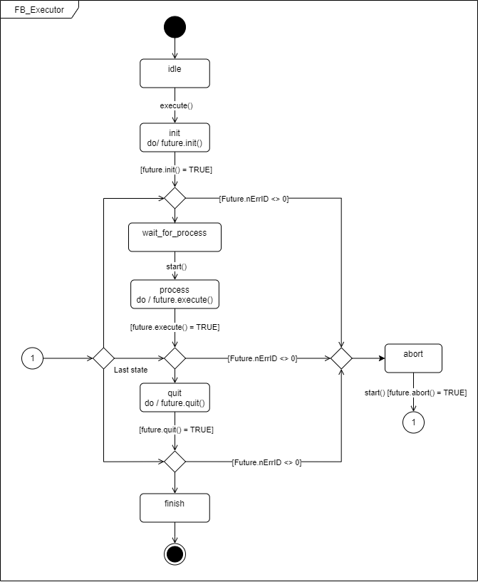

技術資料¶
システム¶
オブジェクト構成¶
クラス図を図 2.9に示します。タスクの定義は、InterfaceFutureのインターフェースを実装して行いますが、ユーザが実装する基底ファンクションブロックFB_AbstructFutureと、各種ジョブコンテナファンクションブロックで実装されています。FB_Executorは、ジョブであるFutureオブジェクトの実行主体ですので、1:1の関係で包含します。
また、各種ジョブコンテナは、FB_Executor型の配列を内包します。配列サイズはライブラリパラメータMAX_FUTURE_NUMで設定します。これを順に実行する場合はBatchJobContainer、または、QueueJobContainer、並行して同時実行する場合はParallelJobContainer、または、ParallelQueueJobContainerを用います。
このように、ジョブコンテナも、FB_AbstructFutureを継承したユーザタスクも、どちらもInterfaceFutureが基底インターフェースとなり、同様にFB_Executorは実行することができます。
Tip
このデータモデルは、コンテナとユーザ定義タスクインスタンスが親子関係を構成し、さらにコンテナの中にコンテナを構成するなど、深いツリーモデルが構築可能です。このデザインパターンを、GoFのCompositeパターンと呼びます。

図 2.9 JOB制御クラス図¶
FB_Executor状態マシン¶
Futureオブジェクトは処理内容の静的な定義のみ行い、InterfaceFutureのインターフェースをを用いて実行する主体はFB_Executorファンクションブロックです。
FB_ExecutorファンクションブロックではE_FutureExecutionState enum型の変数を持ちた状態を持ち、current_stateプロパティを用いて参照することができます。状態遷移図を図 2.10,表 2.1に示します。

図 2.10 FB_Executorステートマシン図¶
ステート |
説明 |
終了条件 |
|---|---|---|
idle |
初期状態（非活性状態） |
FB_Executorが制御するジョブオブジェクトが、idleまたはfinish状態など実行中でない状態であること。 |
init |
futureオブジェクトの初期化処理 |
futureオブジェクトの |
wait_for_process |
外部からの実行指示待ち状態。 |
FB_Executorの |
process |
実行中状態 |
futureオブジェクトの |
quit |
終了処理状態 |
futureオブジェクトの |
abort |
中断処理中、または中断処理完了状態 |
中断処理完了状態で、FB_Executorの |
finish |
終了状態（非活性状態） |
idleとおなじ |
ファンクションブロック¶
InterfaceFuture¶
タスク、および、ジョブコンテナ向けのインターフェースです。
メソッド名 |
型 |
戻り値 |
説明 |
|---|---|---|---|
|
BOOL |
実行前に必要な変数やオブジェクトの初期化を行います。処理完了時にTRUEを返す必要があります。 |
|
|
BOOL |
タスク本体の処理を実装します。処理完了時にTRUEを返す必要があります。 |
|
|
BOOL |
実行後の変数やオブジェクトの後始末を行います。処理完了時にTRUEを返す必要があります。 |
|
|
BOOL |
中断処理が行われた際に実施する処理を実装します。処理完了時にTRUEを返す必要があります。 |
プロパティ名 |
型 |
方向 |
説明 |
|---|---|---|---|
nErrorID |
UDINT |
GET |
エラー発生時は0以外の値を返します。参照 |
future_name |
STRING |
GET SET |
ジョブ名称を定義します。 |
state |
E_FutureExecutionState |
GET SET |
Futureインスタンスが |
排他の仕組み
FB_Executor内ではidle状態からinit状態に遷移する条件として、リンクされたFutureオブジェクトのstateプロパティを経由して得た状態が、idleまたはfinishである必要があります。すでに他のExecutorにより実行中である場合、Futureオブジェクトのミラーstateの状態がこのいずれの状態でもないため、initへ遷移することができません。先行して取得しているExecutorがfinish状態にすることで後発のExecutorが同じFutureオブジェクトを用いてinitから処理を開始することができるようになります。
InterfaceFutureインターフェースの名前はFutureパターンから由来しています。複数の演算コアで並列処理を行うのではなく、単一の演算コア上にタスクを順次パイプライン実行していく仕組みにより、処理完了を待たされる（ブロックされる）ことなく処理を進めることができます。実際の演算は将来行われることからFutureパターンと呼ばれています。
このインターフェースにより実装したファンクションブロックをタスクとして、次節に示すFB_Executorで統一的に実行することが可能になります。
InterfaceContainer¶
ジョブコンテナ用のインターフェースです。
メソッド名 |
型 |
戻り値 |
説明 |
|---|---|---|---|
|
UINT |
登録されたFuture番号を返す |
ジョブコンテナにFutureを登録する。 |
|
BOOL |
コンテナの初期化完了でTRUEを返す |
add_futureで登録したFutureを全てクリアする。 |
get_future_statue |
E_FutureExecutionState |
引数で指定したFuture番号の現在の実行状態を返す |
指定したFuture番号の現在状態を調べる。 |
プロパティ名 |
型 |
方向 |
説明 |
|---|---|---|---|
active_futures |
UINT |
Get |
|
continuous_mode |
BOOL |
Set |
全てのfutureが実行完了しても終了せず、新たなfutureが追加されるのを待つモードを有効にします。 |
job_event_reporter |
InterfaceJobEventReporter |
Set |
包含している |
num_of_future |
UINT |
Get |
|
parent_executor |
REFERENCE TO FB_Executor |
Set Get |
親のコンテナジョブオブジェクトが有る場合、そのExecutorオブジェクトにアクセスします。 |
FB_Executor¶
FB_Executorは、InterfaceFutureを実装したファンクションブロックを実行するファンクションブロックです。
メソッド名 |
型 |
戻り値 |
説明 |
|---|---|---|---|
|
BOOL |
初期化処理完了時にTRUEが返る |
タスクの処理を開始できる状態に初期化する。 |
|
BOOL |
タスク処理完了時にTRUEが返る |
|
|
BOOL |
中断処理完了時にTRUEが返る |
|
|
BOOL |
なし |
|
プロパティ名 |
型 |
方向 |
説明 |
|---|---|---|---|
nErrorID |
UDINT |
GET |
エラー発生時は0以外の値を返します。参照 |
active_task_id |
UINT |
GET |
|
current_state |
E_FutureExecutionState |
GET |
|
future |
InterfaceFuture |
SET |
実装したタスクをセットします。 |
done |
BOOL |
GET |
InterfaceFutureで実装した |
ready |
BOOL |
GET |
InterfaceFutureで実装した |
job_event_reporter |
InterfaceJobEventReporter |
SET |
InterfaceJobEventReporter実装ファンクションブロックのインスタンスをセットします。 |
start()メソッドや、ready、doneプロパティはタスク同士を連続して実行する際、InterfaceFutureのinit()やquit()の処理によりサイクルの隙間が発生しないようにするトリガやイベントです。
InterfaceJobEventReporter¶
FB_Executorの状態変化時にコールされるイベントハンドラ用のインターフェースです。このインターフェースを実装したファンクションブロックインスタンスを、FB_Executorのjob_event_reporterにプロパティにセットして使います。
- reportメソッド
FB_Executorの処理で状態遷移が発生した際にコールされるイベントハンドラ。- 引数
- old_state
- 型
E_FutureExecutionState;
- 説明
状態遷移が発生する旧状態
- new_state
- 型
E_FutureExecutionState;
- 説明
状態遷移が発生する新状態
- record_time
- 型
Tc2_Utilities.T_FILETIME64;
- 説明
状態遷移が発生したWindowsファイルタイム（100ns精度）
- executor
- 型
REFERENCE TO FB_Executor;
- 説明
状態遷移の発生元
FB_executorインスタンスへのリファレンス
- 戻り値
- 型
BOOL
- 説明
イベントハンドラ処理が終了したらTRUEを返す
データ型¶
E_FutureExecutionState¶
名称 |
値 |
説明 |
|---|---|---|
idle |
0 |
未実行状態 |
init |
1 |
初期化中状態 |
wait_for_process |
2 |
初期化完了で実行指示待ち。start()メソッドによりprocessへ移行。 |
process |
3 |
実行中状態 |
abort |
4 |
中断処理中、または、中断処理完了状態。中断処理完了状態であれば、start()メソッド実行することで、再度中断前の状態に遷移する。 |
pause |
5 |
未使用 |
quit |
6 |
終了処理中状態 |
finish |
7 |
全処理完了状態 |